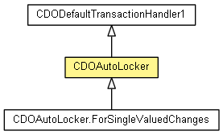

org.eclipse.emf.cdo.transaction
Class CDOAutoLocker
java.lang.Object
 org.eclipse.emf.cdo.transaction.CDODefaultTransactionHandler1
org.eclipse.emf.cdo.transaction.CDOAutoLocker
org.eclipse.emf.cdo.transaction.CDODefaultTransactionHandler1
org.eclipse.emf.cdo.transaction.CDOAutoLocker
- All Implemented Interfaces:
- CDOTransactionHandler1, CDOTransactionHandlerBase
- public class CDOAutoLocker
- extends CDODefaultTransactionHandler1

A transaction handler that automatically acquires write locks when
objects are modified.
- Since:
- 4.2
| Methods inherited from class java.lang.Object |
clone, equals, finalize, getClass, hashCode, notify, notifyAll, toString, wait, wait, wait |
CDOAutoLocker
public CDOAutoLocker(long timeout)
CDOAutoLocker
public CDOAutoLocker()
modifyingObject
public void modifyingObject(CDOTransaction transaction,
CDOObject object,
CDOFeatureDelta featureChange)
- Description copied from class:
CDODefaultTransactionHandler1
- This implementation does nothing. Clients may override to provide specialized behaviour.
- Specified by:
modifyingObject in interface CDOTransactionHandler1- Overrides:
modifyingObject in class CDODefaultTransactionHandler1
Copyright (c) 2011, 2012 Eike Stepper (Berlin, Germany) and others.